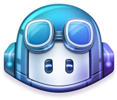

Proyectos
Traductor de Google

Logo del Traductor de Google
El Traductor de Google es un sistema multilingüe de traducción automática, desarrollado y proporcionado por Google, para traducir texto, voz, imágenes o video en tiempo real de un idioma a otro. Utiliza una red neuronal para traducir frases enteras, mejorando en traducciones cada vez que es utilizado y corregido.
GitHub Copilot
Logo de GitHub Copilot
GitHub Copilot es una herramienta de inteligencia artificial desarrollada por GitHub y OpenAI para ayudar a los usuarios de entornos de desarrollo integrados de Visual Studio Code, Visual Studio, Neovim y JetBrains mediante el autocompletado de código.
DALL-E2

Logo de DALL-E2
DALL-E es un programa de inteligencia artificial que crea imágenes a partir de descripciones textuales que son pasadas a una red neural que identifica 12 mil millones de parámetros para crear una obra de arte que cumpla con la descripción proporcionada. Utiliza tecnologías de redes neuronales, y varios algoritmos de procesamiento de lenguaje natural.